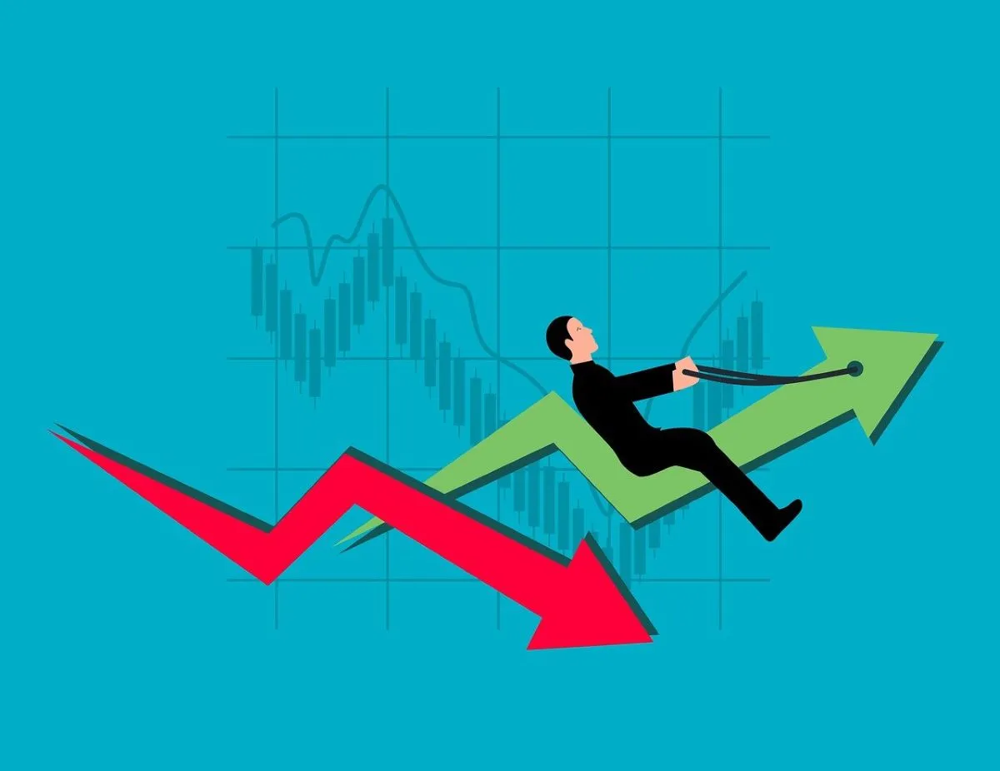

Table of Content
- What is trading?
- Understanding different types of trading in the Share Market
- 1. Intraday Trading
- 2. Swing Trading
- 3. Position Trading
- 4. Scalping
- 5. Momentum Trading
- 6. Long-Term Investing
- Why Choose Different Types of Trading Styles?
- Conclusion
Different types of trading in india 2024
Trading is a key part of finance, especially in the stock market. It means buying and selling different financial items like stocks, bonds, or commodities to make money.
Many people take part in the stock market to increase their wealth over time, but it's important to know that trading needs knowledge, planning and sometimes a little patience.
In this explanation, we will talk about what trading is and the different types of trading styles you can find in the stock market. But learning about the different types of trading in the share market can help you decide what kind of trader you may want to be.
What is trading?
Trading simply means exchanging something, usually money, for financial products like company stocks. when you buy a stock, you bought a small share of a company. In selling that stock, ownership is transferred to another for money.
The share market is like a large marketplace where traders and investors come together to trade or invest these products. The value of the products being traded changes daily because of many reasons like company performance, economic conditions and investor sentiment.
Traders try to make money by buying at a lower price and selling at a higher price or by using other techniques to predict price movements.
Understanding different types of trading in the Share Market
There are different types of trading rules in the share market and they have specific timings, ways of working and strategies. Understanding these types of trading helps you decide which best suits your trading style.
1. Intraday Trading
Intraday trading is known as day trading, it means any stock, option or futures buy or sell on the same day. Intraday trading is the process by which a trader buys and sells stocks within the same day. No positions remain overnight.
Intraday traders make little profit from the daily fluctuations in prices for a stock. Since intraday traders close their trades by the end of the day, they don’t have to fear about changes in price after the market closes.
For example, an intraday trader may buy a company's shares in the morning when the price is low and sell them in the afternoon when the price rises slightly. This may also have small price differences that add to big profits when done several times.
Intraday Trading Features:
Trades are completed within one day and profits come from small price movements and require continuous attention & fast decisions.
2. Swing Trading
Swing trading is another type of trading where many traders hold a stock for several days and tries to make money from short or medium changes in price. Swing traders do not need to continuously monitor the markets like intraday traders, but they still have to watch what's happening in terms of trends and changes.
The idea is to “swing” between high and low prices, buying when the stock price is low and selling when it goes up. Swing traders use technical analysis (looking at past price changes) to spot trends and make their trades based on that.
Swing Trading Features:
Trades exits for days or weeks and focuses on trends in stock price movements, which requires patience and some market knowledge.
3. Position Trading
Position trading is another type of trading in which the trader holds stocks for months or years. In position trading, money is profit to be earned from big price changes over time.
Unlike swing trading or intraday trading, position traders are not interested in short-term ups and downs; they try to take advantage of important trends.
For example, an investor believes a company will experience some significant growth in the future several years. He buys that stock and keeps holding it, hoping for the price to increase time after time.
This type of trading requires thorough study and intense belief in your decision to invest.

Position Trading Features:
Long-term method, like months or years and focus on big market trends and need patience and long-term data analysis.
4. Scalping
Scalping is a hard and quick type of trading. Scalpers make several trades per day, trying to earn small changes in prices. These traders buy and sell stocks in just a few seconds or minutes.
Even though the profit on each trade is small, scalpers depend on making a lot of trades to build up big gains over time.
Scalping is best for traders who want to work fast and can handle mental stress. It also needs special tools such as algo software and advanced software, as being quick and accurate is very important.
Scalping trading features:
Scalping is the very short-term trade like seconds or minutes and focuses on small price movements and highly requires speed, attention and advanced trading tools.
5. Momentum Trading
Momentum trading is actually based on taking advantage of a stock that moves strongly in one direction; thus, after buying stocks that go up or down significantly, a momentum trader holds them until the movement slows down and then sells when the stock loses its momentum.
The strategy is highly dependent on the search for strong trends and fast movement to take advantage of them, hence working optimally under conditions with high volatility and changing prices fast.
Momentum Trading Features:
Profits from fast-moving trends and include both rising and falling stocks and also require quick action and market knowledge.
6. Long-Term Investing
Long-term investing is not typically considered trading but an integral part of the stock market. Long-term investors buy any stock and hold the stock for a long period of time so that the value of the stock increases day by day.
They are less concerned with price movements but involve much more in how the company grows generally.
This plan is often used to build wealth over time and therefore works best for those who like a low-risk, easy-going way to invest in the stock market.
Long-Term Investing Features:
Stocks are held for many years and mostly focus on company growth and dividends and are suitable for low-risk, long-term investors.
Why Choose Different Types of Trading Styles?
Each of these different types of trade in the stock market has its advantages and disadvantages. The best types of trading in the share market for you will depend on your personality, financial goals and the amount of time you can spend on the share market.
- 1) If you like fast-moving situations and can make quick decisions, intraday trading or scalping may be good for you.
- 2) If you like identifying trends and don’t want to monitor the market all day, swing trading or momentum trading could be a good fit.
- 3) If you are more easy-going and interested in long-term growth, position trading or long-term investing might be your best option.
Conclusion
Knowing the different types of trading in the stock market is very important to anyone who would like to participate in the stock market trading. Whether you prefer the fast-paced action of intraday trading or the patient strategy of position trading, there is a trading style that suits every kind of trader.
Choosing the right type of trading depends on your personal risk tolerance, the time you can commit, and your financial goals. No matter which style you choose, it’s important to keep learning and improving your trading strategy to succeed in the stock market trading world and also check our Disclaimer page.